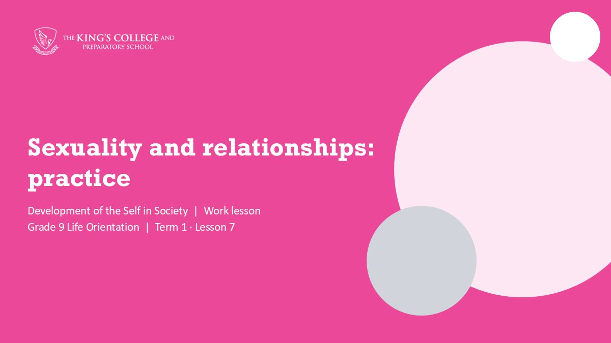

Term 1 · Lesson 7 · Work lesson: written practice
Sexuality and relationships: practice
Start here
Today I will
- Revise sexuality, boundaries and the law from my Handbook
- Answer IEB-style questions about a scenario
- Mark my work and plan how to improve
Quick quiz: name three influences on how teens see sexuality, and two consequences of early sexual activity.
Words to know
- Consent
- A free, clear yes without pressure.
- Boundary
- Your personal line about what is OK and not OK.
- Norms
- Unwritten rules about expected behaviour.
- Sexual health
- Well-being about sexuality, not just the absence of disease.
Slides

Notes
This lesson revises: Term 1 · Lesson 5: God's design for sexuality, Term 1 · Lesson 6: Boundaries, purity and the law. Read those notes first, then do the written practice.
Guard your heart, know your boundaries, and use the source in exam answers.
Written practice
Mia (15) has been chatting to Jason, a 17-year-old she met on a gaming app. He is charming and tells her she is 'more mature than other girls'. Now he keeps asking her to send photos and says: 'If you really liked me, you would. Nobody will see it.' Mia feels flattered but uneasy. Her friend Thabo notices she is quiet and asks if she is OK.
- 3.1Define the term 'consent'.(1 x 1) (1)
- 3.2State TWO things that sexuality includes, apart from sex.(2 x 1) (2)
- 3.3Identify TWO warning signs in Jason's behaviour.(2 x 1) (2)
- 3.4Explain why Jason's statement 'Nobody will see it' is not true.(1 x 2) (2)
- 3.5Explain what the law in South Africa says about sexual images of people under 18.(1 x 2) (2)
- 3.6Recommend TWO assertive steps Mia can take. In each answer, also give the result.(2 x 2) (4)
- 3.7Explain how Thabo can be a good friend to Mia in this situation.(1 x 3) (3)
- 3.8Assess how setting personal boundaries before a relationship starts can protect a teenager.(1 x 4) (4)
Finished early?
Try the sexuality and relationships set from the Term 1 exam practice bank, or take on the challenge question.
- Turn to the Term 1 exam practice bank at the back of your Activity Book and find Set B: Sexuality and relationships.
- Answer two questions, OR the challenge: 'Evaluate the statement: "If you really liked me, you would" is a sign of love. (1 x 4)'
- Use a full four-block answer: judgement, reason, qualifier, outcome.
- Mark yourself with the Term 1 exam practice memo on Google Classroom and note what was missing.